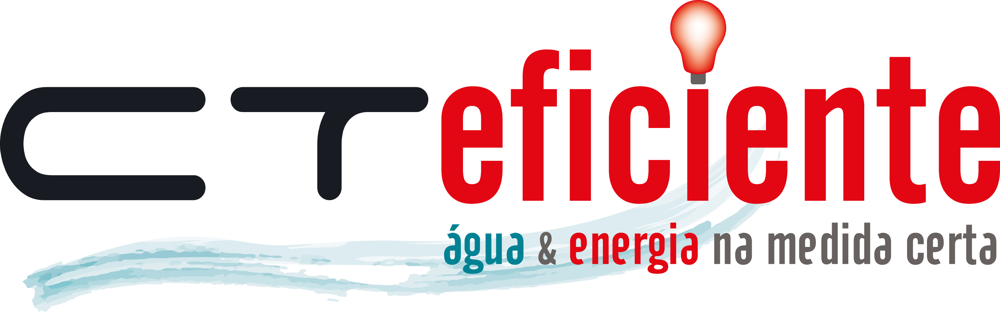

Criado em 2009 · Racionalização de Recursos
Gestão inteligente e combate ao desperdício de água e eletricidade no CT/UFRJ.
Tópicos do CT Eficiente
Cards com imagem, resumo e acesso à página completa de cada tema.
⚡ Conheça o CT Eficiente
O CT Eficiente é um programa ambiental criado em 2009 com o objetivo de promover o uso racional de recursos naturais e energéticos no Centro de Tecnologia da UFRJ.
Por meio de estudos técnicos, ações educativas e implantação de tecnologias mais eficientes (como iluminação LED, sensores de presença e redutores de vazão), o programa busca reduzir desperdícios e incentivar práticas sustentáveis na universidade.
📜 Linha do Tempo
- 🕒 2009: Criação sob o nome original de CT Consciente.
- 🕒 2014: Reestruturação e mudança de nomenclatura para CT Eficiente.
- 🕒 2015-2018: Estudos de consumo hídrico e elétrico nos prédios e primeiras trocas de lâmpadas.
- 🕒 2026: Expansão para monitoramento climático inteligente e gestão digital de vazamentos.
💡 Consumo de Energia Elétrica
A energia consumida na universidade é de fonte pública e custeada coletivamente. Reduzir o desperdício diminui custos para a instituição e reduz a emissão de gases estufa.
- 💡 LEDs gastam até 80% menos eletricidade que fluorescentes.
- 💡 Aparelhos em modo stand-by continuam drenando eletricidade.
- 💡 A iluminação e climatização compõem 70% do consumo do CT.
🚰 Consumo Consciente de Água
A água é um recurso finito. Campanhas periódicas ensinam a comunidade a evitar vazamentos e monitorar torneiras defeituosas nos banheiros dos blocos.
- 🚰 Fechar torneiras totalmente após o uso.
- 🚰 Evitar torneiras abertas sem necessidade em laboratórios.
- 🚰 Denunciar imediatamente qualquer sinal de vazamento ou cano rompido.
🔍 Caça ao Desperdício
Encontrou goteiras, torneiras ligadas, salas vazias com ar-condicionado funcionando ou luzes acesas sem necessidade? Reporte pelo formulário abaixo!
💡 Tecnologias para Eficiência
Sistemas implementados ou sugeridos para otimizar os fluxos energéticos no CT.
Lâmpadas LED
Menor potência com mesma capacidade de iluminação e alta durabilidade.
Sensores de Presença
Evitam que lâmpadas fiquem acesas em corredores ou banheiros vazios.
Torneiras Automáticas
Fluxo temporizado para evitar que torneiras fiquem abertas por esquecimento.
Redutores de Vazão
Bicos arejadores que diminuem o volume de água sem reduzir a pressão.
🌞 Projeto Solar CT (Perspectiva)
O Centro de Tecnologia estuda a implantação de um sistema de painéis fotovoltaicos sobre as coberturas dos blocos acadêmicos. Essa energia solar ajudará a suprir laboratórios de alto consumo e criará uma microrrede inteligente experimental (Smart Grid).
🔌 Simulador de Consumo e Economia
Veja como hábitos simples multiplicados por centenas de estudantes causam impacto financeiro e ecológico real no CT.
Resultado Estimado (30 dias)
🧠 Quiz e Boas Práticas
🧠 Quiz CT Eficiente
Descubra se você sabe consumir recursos de forma inteligente.
Carregando pergunta...
📋 Guia de Boas Práticas
Medidas operacionais recomendadas em cada núcleo de vivência.
- 💻 Monitores: Desligue a tela ao afastar-se por mais de 10 minutos.
- ☀️ Luz Natural: Aproveite a luz solar abrindo janelas e persianas.
- 🖨️ Papel: Evite impressões desnecessárias e use rascunhos.
- 💡 Apagar Luzes: Apague todas as luzes da sala ao fim da aula.
- ❄️ Portas e Janelas: Mantenha-as fechadas enquanto o ar-condicionado estiver em uso.
- 🎥 Projetores: Desligue o datashow se não houver uso por mais de 5 minutos.
- 🔬 Equipamentos: Ligue estufas e computadores de ensaio apenas quando necessário.
- 🚰 Pias e Torneiras: Certifique-se de fechar bicos de lavagem totalmente.
- ⚙️ Reporte de Danos: Notifique a equipe sobre vazamentos ou falhas elétricas nas bancadas.